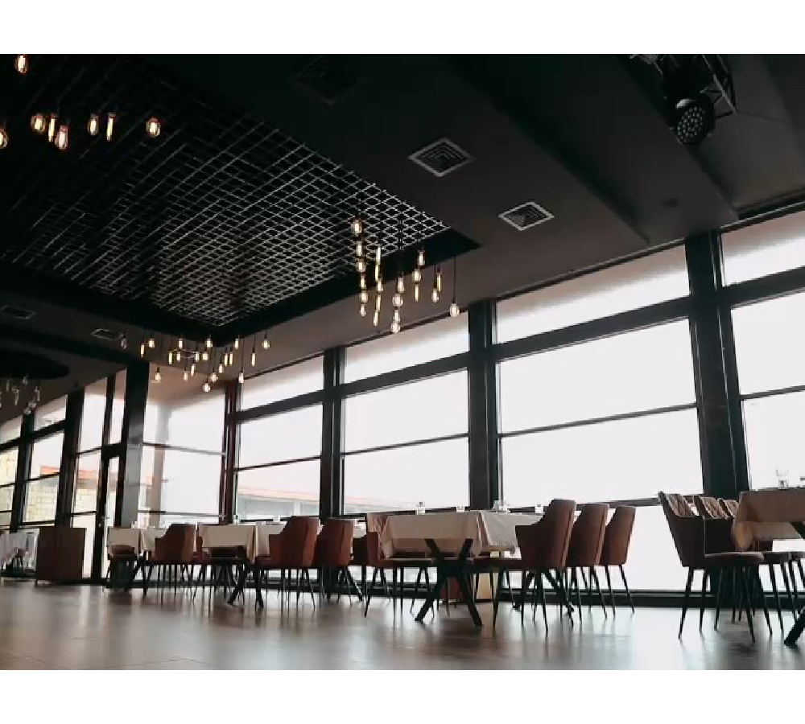
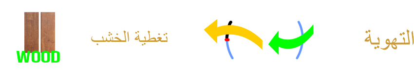
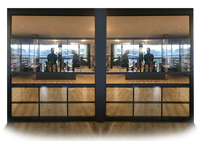
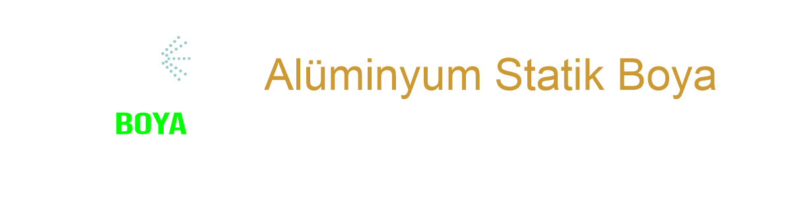

الرئيسية
المنتجات
الكيوتين
العريشة
العريشة المناخية
قواطع الرياح
الستائر المظغوطة
المظللة
السقف الزجاجي
النافدة المنزلقة
الباب المنزلق
الزجاج بانورامي
زجاج مفرد / زجاج عازل
عازلة
لون
اتصل
الرئيسية
المنتجات
العريشة المناخية
العريشة
الكيوتين
قواطع الرياح
الستائر المظغوطة
المظللة
السقف الزجاجي
النافدة المنزلقة
الباب المنزلقı
الزجاج بانورامي
لون
عزل حراري / صوتي
الاتصال بنا
أنظمة الزجاج المقصلة (زجاج مفرد / زجاج عازل)

أنظمة الزجاج المقصلة. بفضل التكنولوجيا المتقدمة والميزات الوظيفية ، تجعل مساحات المعيشة مثل الفنادق والمقاهي والمطاعم والمساكن والتراسات والحدائق الشتوية / الصيفية ومراكز التسوق أكثر راحة ولا غنى عنها. اختبر جمال الطبيعة ، وليس الجوانب السلبية ، مع أنظمة الزجاج المقصلة. كمجموعة دوروك لعملائنا الكرام ؛ استمتع بالربيع أو الخريف أو الشتاء ؛ نحن نقدم مساحات معيشة لأربعة فصول حيث يمكنك الاستمتاع بمزيد من الاتساع والأوسع والأكثر إشراقًا ، بدون مياه باردة أو مطر أو ثلج.
مميزات النظام
- مساحة المعيشه لفصول الأربعة
- يتكون نظام المقصلة من ألواح زجاجية متحركة رأسياً
- يمكن تطبيق أنظمة المقصلة على المساكن متعددة الطوابق وكذلك الأعمال التجارية مثل المقاهي والمطاعم ، وذلك بفضل ميزة التنظيف.
- يمكنك التحكم في النظام بأكمله أو وحدة واحدة بجهاز التحكم عن بعد. بفضل تقنية () ، يمكنك إيقاف الحركة في أي وقت
- يمكن اضافة المستشعرات المطر والرياح إلى النظام ، عندما يكتشف النظام حالات هطول الأمطار والعواصف يتم إيقاف تشغيله تلقائيًا.
- (LED) نظام إضاءة.

منتجاتنا
انظمة الزجاج المقصلة (زجاج واحد)

أنظمة الزجاج المقصلة (عازل الحرارة)
التصميم والوظيفة
- أنظمة الزجاج المقصلة، زجاج المقسى ٨ مم (مقاومة للكسر) أو ألواح زجاجية مزدوجة تتحرك لأعلى / لأسفل بمساعدة المحرك ، وتوفر زاوية رؤية بانورامية وإضاءة طبيعية مع دخول ضوء النهار.
- يعمل محرك نظام المقصلة باستخدام تقنية (RTS) مع جهاز تحكم عن بعد ويمكن إيقاف الحركة في أي وقت بفضل تقنية بدء التشغيل
- يمكن تشغيل النظام بأكمله أو وحدة مفردة منها بجهاز تحكم عن بعد.
- المقاطع الزجاجية لا تؤثر الجماليات ومجال الرؤية ، وتوفر تكاملًا تامًا مع البيئة الخارجية مع خيارات غير محدودة من الألوان والطلاء الخشبي والأنماط
- تعمل مستشعرات المطر والرياح التي يمكن إضافتها إلى النظام على اكتشاف حالات مثل هطول الأمطار والعواصف عند تشغيل النظام وإيقاف تشغيله تلقائيًا
- يعمل بانسجام مع أنظمة البيوت الذكية
- أنظمة المقصلة لدينا ؛ تم إجراء اختبارات الصوت والرياح والعزل اليها من قبل منظمات مستقلة ولديها شهادات في المعايير الأوروبية. يتميز نظام الزجاج العازل بتوفير أعلى للطاقة ومقاومة الرياح وضيق المياه مقارنة بالزجاج القياسه 8 مم
- يمكن تفضيل العارضة الزجاجية الثابتة في النظام على أنها جناح
- يتيح خيار الزجاج الفاسيستاس فرصة لتنظيف الألواح الزجاجية من الخارج في الأرضيات العالية. بالإضافة إلى ذلك ، عند إيقاف تشغيل النظام ، يمكن فتح جناح الإمالة وتهوية البيئة.
الأمان
- يمنع الأصابع من تعلق بين الألواح الزجاجية أثناء إغلاق النظام. عند تشغيل النظام ، يتم ضبط الحد الأدنى للمحرك بحيث يكون هناك فجوة بمقدار 1-2 سم بين الزجاج المتحرك والزجاج الثابت ، مما يمنع خطر التشويش حتى في وضع الانتظار
- يوفر نظام المقصلة سلسلة الفولاذية (اختياري) أمانًا أكثر من أنواع التطبيقات الأخرى
- في تطبيقات الشرفات ، يعمل نظام المقصلة كدرابزين زجاجي آمن بنسبة 100٪ أثناء التجميع وكذلك ميزة النافذة
- عندما يكون الانظمة مفتوحا يوفر الزجاج والبروفيل امانا للمستعملين
توفر أنظمة كيوتين عزلًا صوتيًا بنسبة 60٪ ، كما أن زجاج التآزر والراحة الذي يمكن استخدامه في الأنظمة ذات الزجاج المزدوج يمكن أن يزيد من ميزة العزل الحراري إلى مستويات أعلى.

- يتم دهان الأجزاء المعدنية والألمنيوم بطلاء مسحوق ثابت حسب طلبك.
يتم تحديد الألوان من خلال نظام أكواد ( ) ويتم إنشاء أمر وفقًا لذلك